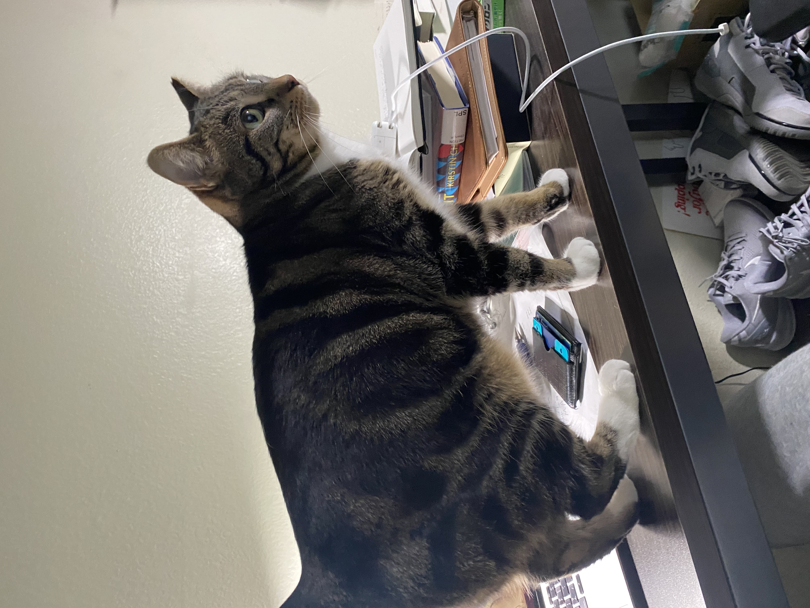
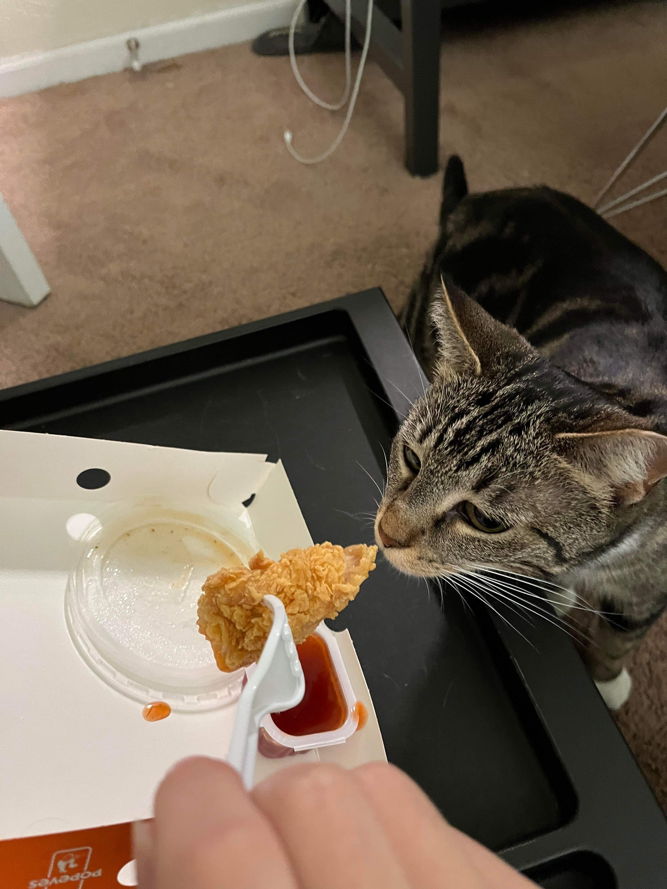
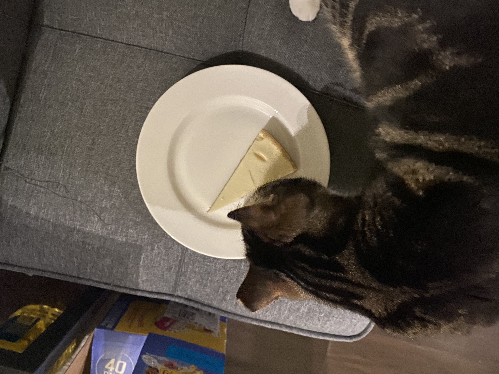

As a cat who loves art I find studying to be a fascinating endeavor, as it allows me to explore the creative and intellectual aspects of various subjects. Just as art involves understanding colors, textures, and compositions, studying multiple subjects involves analyzing and synthesizing information to create a deeper understanding of the world. I appreciate the intricate details and patterns found in academic texts, much like the intricate brushstrokes in a painting.
Beyond staying alive, eating is a pleasure that offers a multitude of experiences and benefits. It allows us to explore a wide range of flavors and cuisines, each with its own unique history and cultural significance. The act of savoring a well-prepared meal can be meditative, providing a moment of mindfulness and connection with the senses. Whether it's trying new recipes, visiting different restaurants, or enjoying traditional family dishes, the joy of eating extends far beyond mere sustenance, you are lying if you disagree.
 